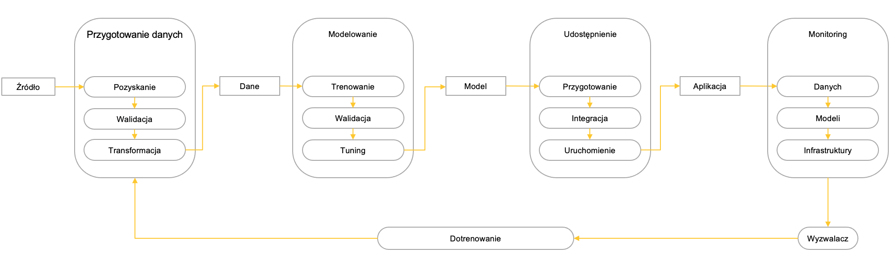
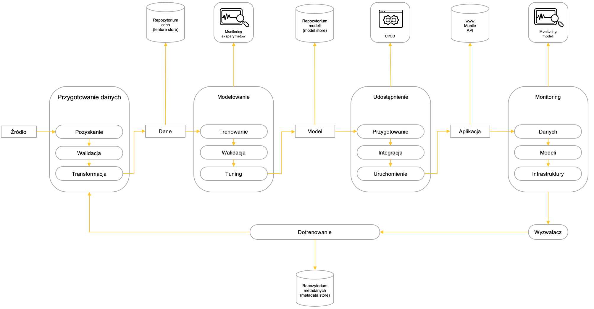
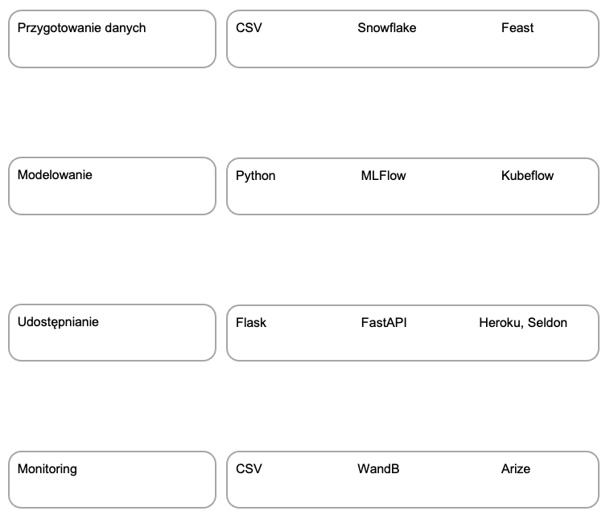
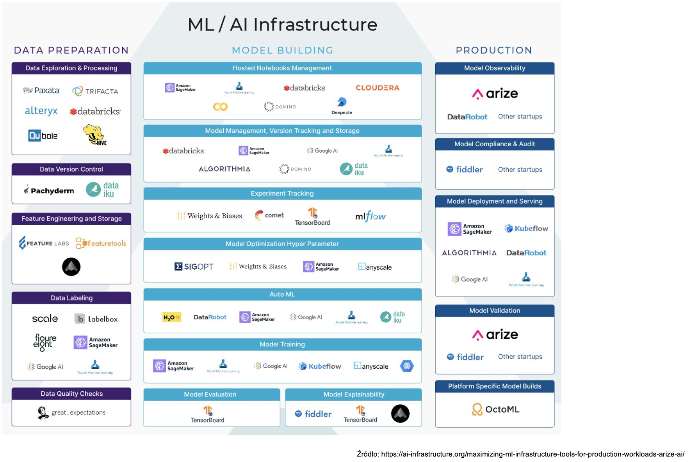
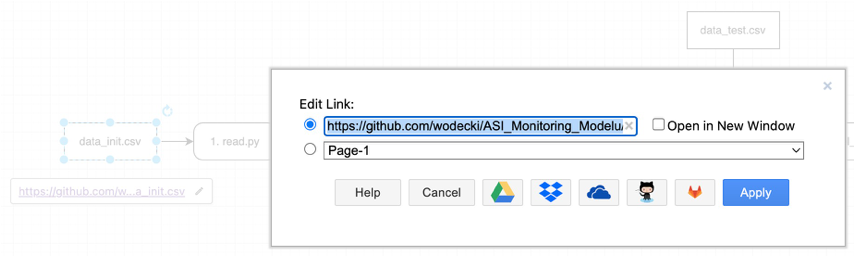
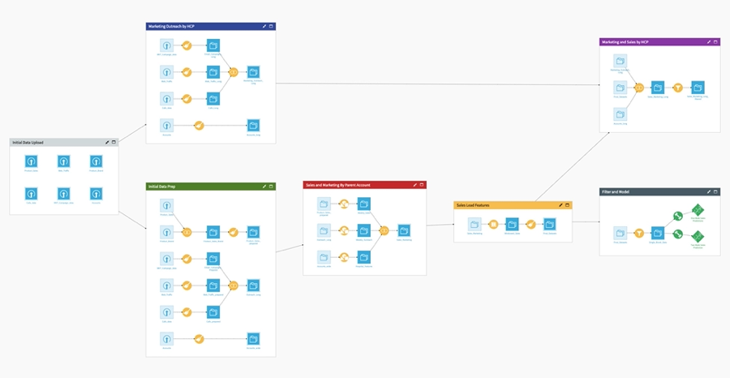

Rozdział 3 Modelowanie architektur
3.1 Cykl życia modelu uczenia maszynowego
Na typowy projekt uczenia maszynowego składają się następujące etapy:
- Przygotowanie danych
- Modelowanie (trening i ewaluacja)
- Udostępnianie modelu
- Monitoring
- Dotrenowywanie.
Za realizację każdego z nich odpowiada najczęściej osobny komponent (na rysunku powyżej zaprezentowany w formie owalnej), który przyjmuje na wejściu oraz generuje na wyjściu tzw. artefakt (oznaczony jako prostokąt).

W realnych projektach sytuacja jest bardziej złożona: na przygotowanie danych, modelowanie, udostępnianie i monitoring składa się wiele etapów cząstkowych (realizowanych przez odpowiednie komponenty):
- Przygotowanie danych
- pozyskanie danych
- walidacja danych
- transformacja danych
- Modelowanie:
- trening i ewaluacja
- walidacja finalnego modelu
- tuning hiperparametrów
- Udostępnianie modelu
- przygotowanie do udostępnienia
- (ciągła) integracja (CI: Continuos Integration)
- (ciągłe) uruchamianie (CD: Continuos Deployment)
- Monitoring
- monitoring i identyfikacja dryfu danych
- monitoring i identyfikacja dryfu modeli
- monitoring infrastruktury
- Dotrenowywanie
- generowanie sygnału dotrenowania
- wybór nowych danych treningowych
- dotrenowanie.

Realizację tych procesów wspiera wiele dedykowanych systemów, wyspecjalizowanych w realizacji konkretnych zadań. Szczególnie istotną rolę odgrywają:
- repozytoria cech (ang. feature stores)
- systemy monitoringu eksperymentów
- repozytoria modeli (ang. model stores)
- systemy ciągłej integracji i udostępniania (ang. continuous integration (CI) and deployment (CD))
- systemy monitorujące modele
- repozytoria metadanych generowanych przez cały proces (ang. metadata stores).

Wybór technologii wykorzystanych do implementacji poszczególnych komponentów zależy od stopnia złożoności projektu. W prostych przedsięwzięciach można z powodzeniem wykorzystać pliki CSV, skrypty Python czy aplikacje typu Flask, bardziej złożone wymagają wdrożenia dedykowanych rozwiązań dostępnych za darmo (np. MLFlow, FastApi czy darmowa wersja WandB.ai), zaś zaawansowane dedykowanych systemów takich jak Feast, Kubeflow, Heroku czy Arize.

Pejzaż dostępnych w tym zakresie rozwiązań jest bardzo dynamiczny: pojawia się tu coraz więcej nowych rozwiązań, czemu towarzyszy mniej lub bardziej dynamiczny rozwój już istniejących.
Przydatne źródła
- Przykład kompletnej architektury projektu uczenia maszynowego, ze świetnie opisanymi poszczególnymi etapami jej konstrukcji, opisany jest tutaj.
- Bardzo dobrym wprowadzenie w zagadnienie cyklu życia projektu maszynowego, i ogólniej w tematykę MLOps jest artykuł dostępny tutaj.
- Nieco bardziej rozbudowane wprowadzenie do różnych poziomów automatyzacji procesów MLOps można znaleźć tutaj:
- Interesujący przegląd narzędzi wspomagających zarządzanie cyklem życia oraz poszczególnymi etapami projektu data science jest dostępny tutaj.
3.2 Demo: trening i ewaluacja modelu
Uwaga: komplet wersji demonstracyjnych, ćwiczeń i rozwiązań oraz rekomendacje dotyczące środowiska uruchomieniowego znajdziesz tutaj:
https://github.com/wodecki/ASI_2022
Cel
Nasz pierwszy kod będzie stanowił punkt wyjścia dla kolejnych ćwiczeń. Stworzymy sekwencję skryptów Python, których zadaniem będzie wczytanie danych treningowych, stworzenie modelu i jego ewaluacja na danych testowych.
Do modelowania wykorzystamy dane syntetyczne, które będą możliwe do zamodelowania z wykorzystaniem prostego modelu regresji liniowej.
Stworzony dzięki temu szkielet oprogramowania będziemy mogli później rozwijać w następujących wymiarach:
- Urealnienie problemu:
- przejście od danych syntetycznych do danych realnych, np. modelowania cen mieszkań
- zmianę typu problemu uczenia maszynowego: przejście od regresji do np. klasyfikacji
- Zamiany prostych skryptów Python na dedykowane biblioteki, służące np. do monitorowania modeli czy pre-processingu danych
- Zmiany środowisk uruchomieniowych: z własnego komputera na docker czy kubernetes.
W ćwiczeniu tym przedstawimy też podstawowe zasady projektowania architektury kodu uczenia maszynowego, w szczególności pojęcia artefaktów, komponentów i wizualizacji relacji pomiędzy nimi z wykorzystaniem diagramów.
Lista kontrolna
Skrypt, który stworzymy, będzie realizował następujące zadania:
- Wczytanie danych
- Wczytuje plik treningowy data_init.csv
- Zapisuje go do pliku data_train.csv
- Trenowanie modelu
- Wczytuje dane treningowe data_train.csv
- Przygotowuje dane do modelowania
- Trenuje model korzystając algorytmu LinearRegression
- Drukuje na ekranie parametry modelu
- Zapisuje model do pliku model_1.0.pkl w folderze model
- Ewaluacja modelu
- Wczytuje model z pliku model/model_1.0.pkl
- Wczytuje dane treningowe z pliku data/data_test.csv
- Generuje predykcje i ocenia model
- Drukuje wyniki ewaluacji na ekranie komputera
Architektura
Artefakty
- Wejście
- Inicjalny plik treningowy: data_init.csv
- Plik testowy: data_test.csv
- Wyjście
- model: model_1.0
Komponenty
- Wczytanie danych (1. read.py)
- Wejście: data_init.csv
- Działania:
- wczytuje dane
- zapisuje na dysku
- Wyjście: data_train.csv
- Trening (2. train.py):
- Wejście: data_train.csv
- Działania:
- Wczytuje dane treningowe data_train.csv
- Przygotowuje dane do modelowania
- Trenuje model korzystając algorytmu LinearRegression
- Drukuje na ekranie parametry modelu
- Zapisuje model do pliku model_1.0.pkl w folderze model
- Wyjście: model_1.0.pkl
- Ewaluacja (3. test.py):
- Wejście:
- data_test.csv
- model_1.0.pkl
- Działania:
- Wczytuje model z pliku model/model_1.0.pkl
- Wczytuje dane treningowe z pliku data/data_test.csv
- Generuje predykcje i ocenia model
- Drukuje wyniki ewaluacji na ekranie komputera
- Wyjście: ekran
- Wejście:
Decyzje
Projektując to rozwiązanie, musimy podjąć następujące decyzje:
- Wybór miary jakości modelu
- RMSE
- R2
- Algorytm(y) ML: LinearRegression
Podsumowanie
3.3 Ćwiczenie: trening i ewaluacja modelu
Zadanie 1. Zapis danych ewaluacyjnych do pliku csv
Zmodyfikuj moduł ewaluacyjny tak, by wyniki były zapisywane do pliku model_eval.csv w folderze evaluation.
Zapisz do niego:
- stempel czasu (aktualny czas) w kolumnie
time_stamp - wersję modelu (liczbę po słowie
modelw nazwie modelu) w kolumnie ‘Model version’ - nazwę miary w kolumnie
Measure - wartości obu miar (
RMSEir2) w kolumniescore
Wykorzystaj w tym celu skrypt 3. evaluate.py
Lista kontrolna
Zmodyfikowany skrypt zapisuje w pliku evaluation/model_eval.csv:
-
stempel czasu (aktualny czas) w kolumnie
time_stamp -
wersję modelu (liczbę po słowie
modelw nazwie modelu) w kolumnie ‘Model version’ -
nazwę miary w kolumnie
Measure -
wartości obu miar (
RMSEir2) w kolumniescore
Zadanie 2. Zapis danych ewaluacyjnych do systemu MLFlow lub Weights&Biases
Zmodyfikuj moduł ewaluacyjny tak, by wyniki były zapisywane do wybranego systemu monitorującego jakość modelu, np. MLflow lub Weights&Biases (www.wandb.com).
Lista kontrolna
Zmodyfikowany skrypt zapisuje w wybranym systemie monitoringowym następujące artefakty:
-
stempel czasu (aktualny czas) w kolumnie
time_stamp -
wersję modelu (liczbę po słowie
modelw nazwie modelu) w kolumnie ‘Model version’ -
nazwę miary w kolumnie
Measure -
wartości obu miar (
RMSEir2) w kolumniescore.
Uwaga: komplet wersji demonstracyjnych, ćwiczeń i rozwiązań oraz rekomendacje dotyczące środowiska uruchomieniowego znajdziesz tutaj:
3.4 Modelowanie architektury - wprowadzenie
Początkowo proste przepływy zadań w projektach uczenia maszynowego mogą z czasem ewoluować w bardzo złożone. Dlatego od samego początku warto stosować metody projektowania zapewniające kontrolę nad architekturą całości.
Rozwiązania takie jak Kubeflow czy Dataiku pozwalają wizualizować zaimplementowane już przepływy, jest to jednak tylko wizualizacja przepływu zaimplementowanego wcześniej np. w formie plików JSON czy skryptów Python.
Do zaprojektowania przepływu uczenia maszynowego można wykorzystać systemy do wpomagające modelowanie procesów. Przykładowo, dostępne na licencji otwartej Diagrams.net, oferowane w szczególności jako aplikacja Google.

Bloki diagrams.net możemy wykorzystać do wizualizacji komponentów i artefaktów przepływu ML. Każdy blok może mieć dedykowany zestaw cech (properties), które można wykorzystać do wprowadzenia własnych meta-opisów.
Szczególną cechą jest link do zasobu zewnętrznego skojarzonego z blokiem. Jeśli wykorzystamy go do połączenia z repozytorium GitHub, rozwiązanie będzie nam służyć nie tylko do wizualizacji architektury, ale też monitoringu aktualnego stanu komponentów i artefaktów. Przykładowo, każdy współpracownik w projekcie będzie miał dostęp do aktualnych miar jakości modelu.
W efekcie, proste, darmowe systemy wspomagające modelowanie procesów czy architektur mogą posłużyć do stworzenia prostych systemów zarządzania procesami MLOps.
3.5 Modelowanie architektury - organizacja
Modelowanie architektur systemów uczenia maszynowego można zrealizować w następujących krokach:
- Organizacja
- Specyfikacja wymagań
- Modelowanie.
Cały proces warto rozpocząć od stworzenia środowiska pracy (zarówno własnej, jak i grupowej). W pierwszej kolejności załóż dedykowany folder (opcjonalnie: udostępnij go współpracownikom), skonfiguruj środowisko zarządzania projektem i utwórz dedykowane repozytorium w systemi Git (np. GitHub).
Następnie zdefiniuj problem i określ zakres modelowania. Chcesz modelować architekturę tylko dla procesu trenowania? A może wnioskowania na produkcji? Czy też zaprojektować pełny cykl MLOps. Przydatny może być tu artykuł dostępny tutaj.
W ostatnim kroku stwórz w dedykowanym folderze pliki odpowiadające pierwszej wersji architektury (w oparciu o swoją intuicję i poprzednie doświadczenia, na razie bez tworzenia szczegółowej specyfikacji). Mogą być to szablony (puste pliki lub zawierające jedynie podstawowe elementy) komponentów, artefaktów oraz ich dokumentacji. Na koniec wprowadź tę strukturę do repozytorium GitHub.
Przydatne źródła
Świetny opis procesu projektowania pełnej architektury MLOps znajdziesz tutaj.
3.6 Modelowanie architektury - specyfikacja wymagań
Mając już przygotowane środowisko pracy, przystąp do tworzenia specyfikacji wymagań. Sugeruję w tym celu określić:
- wymagania funkcjonalne w formie listy kontrolnej
- specyfikację artefaktów
- specyfikację komponentów
- kluczowe decyzje, które należy podjąć implementując rozwiązanie.
Lista kontrolna:
Specyfikuje zakres działania komponentu
Określa standard wykonania
Jest zbiorem kryteriów odbioru
Artefakty to lista obiektów (najczęściej plików z danymi lub modeli), które mogą być:
- Wsadem do komponentu („wejście”)
- Powstawać w wyniku uruchomienia komponentu („wyjście”).
W przypadku plików warto określić:
- Miejsca i nazwy
- Formatu
W przypadku danych przydatne jest też wskazanie:
- Nazw i znaczenia poszczególnych pól
- Typów zmiennych (np. numeryczne, kategorialne, czas, etc.).
Specyfikacja komponentów określa:
- Wejścia (artefakt wejściowy)
- Procedury działań (w oparciu o listę kontrolną)
- Wyjścia (artefakt wyjściowy).
Działania realizowane przez komponent warto pisać tak, by później posłużyły jako dokumentacja wewnętrzna kodu (ang. one-line docstrings, por. np. https://peps.python.org/pep-0257/).
Czynność tę i tak z pewnością trzeba będzie wykonać w przyszłości. Realizacja tego zadania PRZED programowaniem:
- Ułatwi zrozumienie celu i idei działania kodu
- Może istotnie uprościć samo programowanie w środowiskach IDE wykorzystując technologie typu GitHub Copilot (https://copilot.github.com).
W kolejnym kroku wskaż najważniejsze decyzje, jakie trzeba będzie podjąć tworzyć dany komponent. Mogą być one później podjęte np. podczas spotkań zespołu projektowego.
Całość podsumuj np. w prostym arkuszu i zapisz w folderze ze specyfikacją projektu.
3.7 Modelowanie architektury - modelowanie
Mając przygotowaną szczegółową specyfikację działania modułu, stwórz szkic architektury korzystając np. z pakietu diagrams.net (możesz z niego korzystać w ramach aplikacji Google).
Umieść na schemacie:
- komponenty
- artefakty
- oraz relacje pomiędzy nimi.

W kolejnym kroku, podłącz poszczególne komponenty i artefakty do odpowiednich plików w repozytorium GitHub.

Aby podłączyć specyfikację artefaktu/komponentu stwórz dedykowane pole (np. Description), i wklej do niego hiperłącze do specyfikacji. Uwaga: ze względu na ograniczoną liczbę znaków, sugeruję wcześniej skrócić link do dokumentacji korzystając z serwisu takiego jak www.bit.ly.

Z czasem rozwój systemu wymusza modyfikację architektury. Aby utrzymać przejrzystość architektury, wart porządkować komponenty i artefakty w osobne struktury.

Przydatne może być wtedy uporządkowanie poszczególnych etapów modelowania w osobnych folderach.

W pakiecie diagrams.net mogą nam w tym pomóc pionowe kontenery (ang. vertical containers). Pozwalają one na grupowanie komponentów i artefaktów, i w efekcie uproszczenie całej wizualizacji.
Podsumowanie
Tworzenie aplikacji warto rozpocząć od jej zaprojektowania.
Projektowanie architektur uczenia maszynowego nie musi być poprzedzone ich tworzeniem. Z powodzeniem można wykorzystać w tym celu ogólnodostępne, darmowe rozwiązania wspomagające projektowanie schematów.
Korzyści z takiego podejścia to:
- Wizualizacja całości rozwiązania (komponenty, artefakty i relacje pomiędzy nimi)
- Szybki dostęp do aktualnych wersji komponentów i artefaktów dzięki połączeniu z GitHub
- Tworzenie własnych meta-opisów dzięki personalizowanym cechom obiektów.
Przydatne źródła
Świetny opis procesu projektowania pełnej architektury MLOps znajdziesz tutaj.
3.8 Demo: modelowanie
Na tym krótkim filmie pokazuję, w jaki sposób można wykorzystać oprogramowanie Diagrams.net do stworzenia prostej architektury systemu uczenia maszynowego. Poniżej znajdziesz listę kontrolną, specyfikacje artefaktów i komponentów oraz decyzje, jakie należało podjąć w procesie projektowania.
Lista kontrolna
Skrypt, który stworzymy, będzie realizował następujące zadania:
- Wczytanie danych
- Wczytuje plik treningowy data_init.csv
- Zapisuje go do pliku data_train.csv
- Trenowanie modelu
- Wczytuje dane treningowe data_train.csv
- Przygotowuje dane do modelowania
- Trenuje model korzystając algorytmu LinearRegression
- Drukuje na ekranie parametry modelu
- Zapisuje model do pliku model_1.0.pkl w folderze model
- Ewaluacja modelu
- Wczytuje model z pliku model/model_1.0.pkl
- Wczytuje dane treningowe z pliku data/data_test.csv
- Generuje predykcje i ocenia model
- Drukuje wyniki ewaluacji na ekranie komputera
Architektura
Artefakty
- Wejście
- Inicjalny plik treningowy: data_init.csv
- Plik testowy: data_test.csv
- Wyjście
- model: model_1.0
Komponenty
- Wczytanie danych (1. read.py)
- Wejście: data_init.csv
- Działania:
- wczytuje dane
- zapisuje na dysku
- Wyjście: data_train.csv
- Trening (2. train.py):
- Wejście: data_train.csv
- Działania:
- Wczytuje dane treningowe data_train.csv
- Przygotowuje dane do modelowania
- Trenuje model korzystając algorytmu LinearRegression
- Drukuje na ekranie parametry modelu
- Zapisuje model do pliku model_1.0.pkl w folderze model
- Wyjście: model_1.0.pkl
- Ewaluacja (3. test.py):
- Wejście:
- data_test.csv
- model_1.0.pkl
- Działania:
- Wczytuje model z pliku model/model_1.0.pkl
- Wczytuje dane treningowe z pliku data/data_test.csv
- Generuje predykcje i ocenia model
- Drukuje wyniki ewaluacji na ekranie komputera
- Wyjście: ekran
- Wejście:
Decyzje
Projektując to rozwiązanie, musimy podjąć następujące decyzje:
- Wybór miary jakości modelu
- RMSE
- R2
- Algorytm(y) ML: LinearRegression
Podsumowanie
3.9 Podsumowanie: modelowanie architektur
Cykl życia modelu uczenia maszynowego jest złożony - dlatego już na samym początku projektu zacząć pracować nad architekturą docelowego rozwiązania.

Większość rozwiązań wizualizuje architekturę w oparciu o już stworzony kod. Do zaprojektowania przepływu uczenia maszynowego można jednak wykorzystać systemy do wpomagające modelowanie procesów. Przykładowo, dostępne na licencji otwartej Diagrams.net, oferowane w szczególności jako aplikacja Google.

Proces modelowania proponujemy zrealizować w trzech krokach: rozpocząć od organizacji, potem stworzyć wstępną specyfikację, a następnie model architektury.

Jeśli wykorzystamy go do połączenia z repozytorium GitHub, rozwiązanie będzie nam służyć nie tylko do wizualizacji architektury, ale też monitoringu aktualnego stanu komponentów i artefaktów. Przykładowo, każdy współpracownik w projekcie będzie miał dostęp do aktualnych miar jakości modelu.